The GPUscale manual
Everything the studio does, why it does it, and the arithmetic underneath. Read section 1 to get a fleet on screen in five minutes; read section 5 if you need to defend a number to somebody who signs the purchase order.
Quick start
GPUscale answers one question: what hardware does this LLM workload need, and will it keep the
promises you made about latency? It is a single static page. There is no account, no backend and
no upload; every number is computed in your browser from closed-form formulas you can audit in
assets/app.js.
- Describe a use case, not a machine. Pick a workload preset (or type the numbers), pick a model, say how many people use it at peak. Leave the hardware alone for now.
- Pick one GPU for the project in Hardware & resilience, and how many of them sit in a node (8 for an HGX box, 72 for an NVL72 rack).
- Press Auto-size. The solver chooses tensor-parallel width, replica count and batch size, then packs the cards into nodes and applies your resilience pattern.
- Read the verdict bar, then the fleet map. If something is red or amber, the Recommendations at the bottom say what to change and, where possible, offer a button that changes it and re-solves.
- Add more use cases. Two cards on the same model and precision are served by one pooled deployment sized for their combined load, which is how real platforms are built.
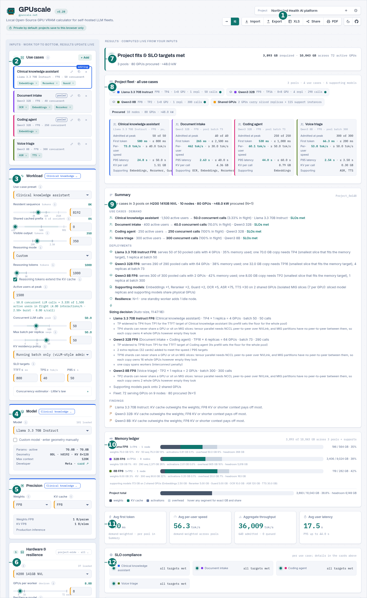
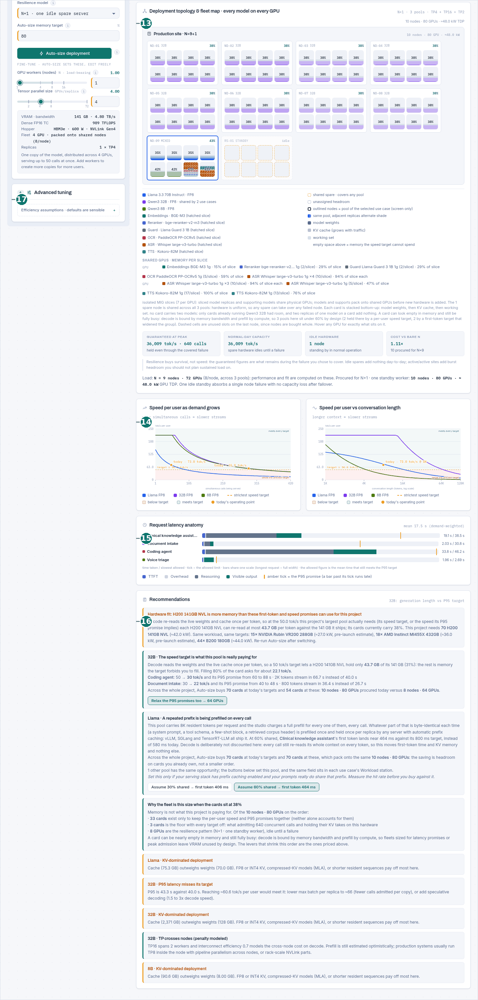
Every screenshot in this manual is one project: a hospital group running four workloads on H200 141GB NVL nodes with one standby worker. You can open it yourself, edit it, and follow along. It is a readable link, so you can also read the project off the URL:
https://gpuscale.net/#p=t:name=Northwind+Health+AI+platform;gpu=H200+141GB+NVL;perw=8;
resil=n1;uc=Clinical+knowledge+assistant;model=Llama+3.3+70B;quant=FP8;kv=FP8;
preset=Clinical+knowledge;users=1500;uc=Document+intake;model=Qwen3+32B;quant=FP8;
kv=FP8;preset=Document+Q&A;users=400;uc=Coding+agent;model=Qwen3+32B;quant=FP8;
kv=FP8;preset=Code+agent;users=250;uc=Voice+triage;model=Qwen3+8B;quant=FP8;kv=FP8;
preset=Voice+agent;users=300(Joined onto one line, without the indentation. Section 12 explains the format.)
How the studio thinks
Three ideas explain almost every number on the page. If you understand these, the rest of the manual is reference material.
Three currencies, spent by two different phases
A GPU sells you three things, and an LLM request spends them in two distinct phases. Sizing goes wrong when people track only the third one.
Diagram 1. The two phases have opposite bottlenecks, which is why one number never describes a deployment.
At the operating point, one card holds about bandwidth × interconnect × MBU ÷ achieved tok/s
gigabytes of KV cache. Promise a faster stream and that number shrinks, so you buy more cards, each
one emptier than the last. Empty-looking cards are usually a latency promise being kept, not
waste.
One model call, never one task
Every workload field in the studio describes a single call to the model. This is the single most common way to get a sizing wrong by an order of magnitude.
| If you mean | Do not write | Write instead |
|---|---|---|
| An agent that makes 40 tool calls to finish a task | 40 × the tokens in one card | One step's tokens, and let the traffic estimator turn tasks into simultaneous calls |
| A model with a 1M-token context window | resident = 1048576 |
The tokens actually held per request, e.g. 8192 |
| A 200,000-token browsing session | visible out = 200000 |
One step: a 64K transcript in, a short tool call out |
Resident sequence means the tokens the server is holding for that request right now: the system prompt, the retrieved passages, the conversation so far, the tool traces. Not the model's maximum context, which is a capability, not a workload.
Use cases become pools, pools own cards, nodes are bought whole
A project is a list of use cases. Two use cases that run the same model at the same weight and KV precision with the same KV policy are served by one deployment sized for their combined load, exactly as they would be in production. That merged deployment is called a pool.
Diagram 2. The order of operations that turns demand into a bill of materials.
Three consequences worth remembering:
- Pooling is not an optimisation you opt into. It is what your serving stack would do anyway. If you need two separate deployments of the same model, tick Isolate on the use case.
- The pool is sized for the combined concurrency of its members, and each member is then evaluated against its own SLO targets at the pool's shared batch size.
- Only the fleet is rounded to whole nodes, once, at the end, after supporting models and co-residency have been placed.
The interface, control by control
Inputs run down the left column in the order you should work: Use cases, then Workload, Model, Precision, then Hardware. Results on the right recompute on every keystroke. Nothing is ever "applied" or "submitted".
The project bar
| Control | What it does |
|---|---|
| Project name | Free text. Appears on the PDF, the workbook and the JSON export. |
| History (clock) | Projects autosave to this browser's local storage as you type. The menu lists them, reloads one, deletes one, or starts a new project. Nothing is uploaded, and clearing site data clears them. |
| Normal / Advanced | Normal asks for people at peak and hides the tuning controls; Advanced exposes every field. See below. |
| Import | Reads a configuration JSON, including files exported by older versions. |
| Export | Writes the whole project as JSON, with a snapshot of every model and GPU used so the file survives library changes. |
| XLS | An Excel workbook with live formulas, not pasted values, plus three native charts. See section 12. |
| Share | Copies a link with the entire project compressed inside the URL. No backend, nothing stored. |
| Opens the print dialog against a print stylesheet that reflows the page into a report. |
Use cases
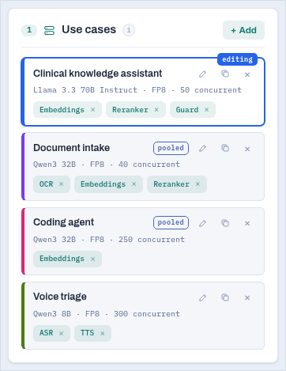
Each card is one workload with its own model, tokens, concurrency and SLO targets. The card shows its model, precision, derived concurrency, and chips for any supporting models attached to it.
- + Add clones the current card as a starting point.
- The copy and × icons duplicate and delete.
- Click the name to rename it. The name is what appears in the fleet map, the charts and the report.
- Support chips (Embeddings, Reranker, Guard, ASR, TTS, OCR) attach automatically from the preset. Click one to inspect or change the model behind it; click × to detach it.
- A pooled badge means this card shares a deployment with another card. Hover it to see which.
- Isolate (in the card menu) forces a card into its own pool even when it could share.
Workload
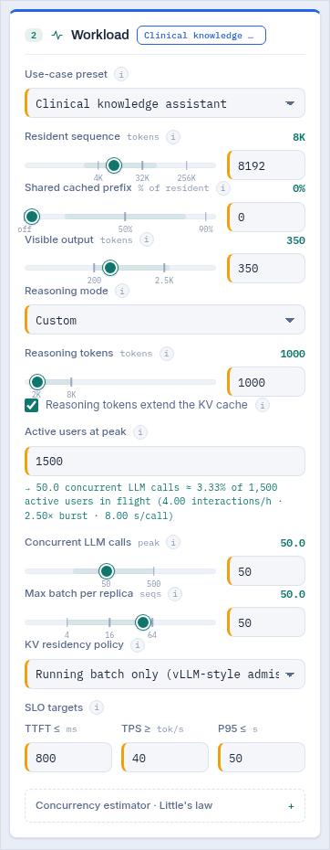
Start from a preset: 24 of them, each with SLO targets traced to published production guidance (section 11). A preset only prefills the fields; edit anything afterwards.
Each preset also suggests a model, marked suggested for this preset next to the model dropdown. It is a starting point of the right size class and modality for that workload, not a ranking, and every one is checked at build time against the preset's own first-token and speed targets so selecting a preset can never leave you looking at a configuration that is red on arrival. The moment you pick a model yourself the suggesting stops for that card, and later preset changes leave your choice alone.
| Field | Meaning | Typical |
|---|---|---|
| Resident sequence | Tokens held per request: system prompt + retrieved context + history + tool traces. Not the model's context window. | 4K chat · 32K agent · 128K long-doc |
| Shared cached prefix | The share of that sequence which is byte-identical on every call, so a server with automatic prefix caching prefills it once and holds it once per replica. Leave at 0 unless you have measured it. | agent loops 40-80% · RAG 10-30% · unique docs 0% |
| Visible output | Tokens the user actually sees per response. | 60 inline completion · 350 chat · 2,000 document |
| Reasoning mode / tokens | Hidden thinking tokens per request. None, Light (2,000), Heavy (8,000) or an exact custom budget. | 256 is enough for 95% of GSM8K accuracy |
| Reasoning extends the KV cache | On: thinking tokens are held in the cache alongside the prompt, so they cost memory and slow decode. Off: they are discarded as they are produced. | on for most stacks |
| Active users at peak | People using the feature in the busiest hour. Drives the concurrency estimator. | |
| Concurrent LLM calls | Requests in flight simultaneously. Typing here pins it and the user count is ignored for this card. | usually 1-10% of active users |
| Max batch per replica | Ceiling on how many requests one replica co-batches. Auto-size sets it; raising it trades per-user speed for throughput. | solved |
| KV policy | Running batch frees KV between turns (vLLM-style admission). Pinned per session holds it for the whole session, which is far more expensive and only correct for live paths where an eviction would break the budget. | running, except voice |
| SLO targets | TTFT in ms, per-user speed in tok/s, end-to-end P95 in seconds. 0 disables a check. tok/s is per user, never aggregate. | see section 11 |
Conversation length: how long is the call?
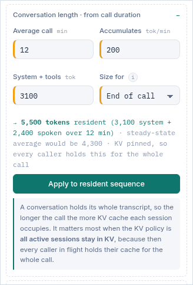
A conversation holds its own transcript, so the resident sequence grows with the length of the call. A two-minute IVR interaction and a twenty-minute contact-centre call are not the same workload, and sizing both at one fixed number is how a voice fleet arrives short.
It matters most when the KV policy is all active sessions stay in KV, which is the correct policy for a live voice path: every caller in flight holds their whole cache for the whole call, so call length multiplies straight into the memory bill.
The drawer opens by itself for a pinned-session workload and stays shut otherwise.
base is everything resident before anyone speaks: system prompt,
persona, tool schemas, retrieved account context. rate is what the conversation adds per
minute.| Workload | Tokens per minute | Why |
|---|---|---|
| Voice through STT and TTS | ≈ 200 | The model sees a text transcript. Conversational speech runs about 150 words per minute across both speakers, and English is roughly 1.3 tokens per word. |
| Native speech-to-speech | 750 to 3,000 | Audio tokens, not text. Codec frame rates run 12.5 to 25 Hz per stream; whether both streams stay in context, and at what rate, is a property of the model. 750 assumes 12.5 Hz with one party speaking at a time. |
| Text chat | ≈ 200 | Typed turns are shorter but arrive less often, which lands in a similar place per minute of active session. |
Both are defensible and the studio shows both, always. End of call sizes every session at its longest. It is the conservative choice, and it is the only one that keeps a first-token promise on the last turn of a long call, so it is the default. Average in flight sizes at half that, which is the correct steady-state figure when call ages are spread evenly across the in-flight population, and it roughly halves the KV bill. Choose the second only if your call-length distribution really is smooth and you have headroom for a run of long calls.
Nothing here changes your sizing until you press Apply to resident sequence. Presets that
describe a session (the two voice presets and contact-centre assist) prefill the drawer with the shape
their own resident figure was built from, so 4,096 for the voice agent stops being an
assertion and becomes a 3,100-token system prompt plus five minutes of conversation. Change the
five and press Apply.
Under Active users at peak the studio shows its working: how many simultaneous calls that headcount implies, and what share of your users that is. It is Little's law (section 5.11) over four traffic parameters the preset supplies. If your own telemetry says otherwise, type the concurrency directly; the card is then marked set manually and the user count stops driving it.
Model
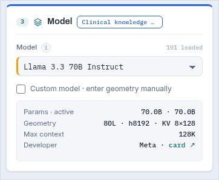
The dropdown carries total and active parameters, hidden size, layers, KV heads, head dimension and maximum context for each entry, plus the architecture class and who published it.
Active parameters is what decides speed and first-token time. For a dense model it equals the total; for a mixture of experts it is much smaller, which is why a 671B MoE can decode faster than a 70B dense model while needing ten times the memory.
Custom model unlocks seven fields (params, active, hidden, layers, KV heads, head dim, context) for anything not in the library. Everything else in the studio works identically; exports carry the geometry so the file stays readable later. While it is on, the dropdown is replaced by a line naming the geometry actually in force, rather than greyed out still showing a library model that is not being used.
Models with grouped-query attention, multi-head latent attention or sliding-window layers are encoded so the engine lands on their true per-token cache cost rather than their nominal head count. The convention is documented in section 5.3 and in docs/DATA.md. It is the difference between a believable number and a fantasy for these architectures.
Precision
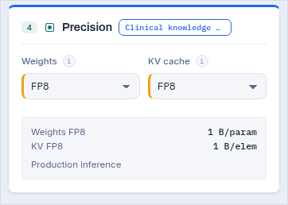
Weights and KV cache are quantized separately, because they trade against different things. Weight precision sets the fixed cost per replica and the bytes re-read per decode step. KV precision sets the per-token cache cost, so it scales with concurrency and context.
19 weight formats from FP32 down to 2-bit GGUF K-quants, and five KV formats. FP8 KV halves the cache against BF16 with negligible quality impact and has become the production default; the studio says so in the recommendations when you leave a KV-dominated pool at BF16.
Hardware and resilience
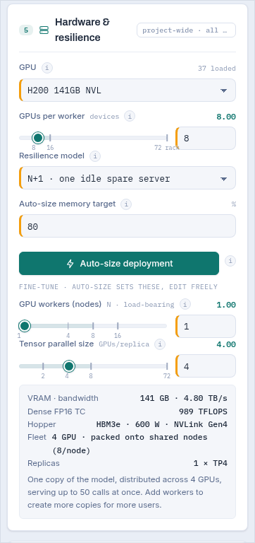
GPU is a project-wide choice: 37 accelerators with dense (not sparsity) TFLOPS, real HBM bandwidth, VRAM and TDP. Mixing GPU types in one project is deliberately not modelled, because in practice a serving pool is homogeneous.
GPUs per node is your chassis: 8 for an HGX or MI300X box, 4 for many OEM servers, 72 for an NVL72 rack. It matters for two reasons: nodes are bought whole, and a tensor-parallel group wider than one node pays a cross-node interconnect penalty.
Resilience model chooses among 12 patterns, from bare N to N+N with disaster recovery (section 9).
Auto-size memory target is the fraction of VRAM the solver is allowed to plan into, 80% by default. The remainder absorbs fragmentation, CUDA graphs and the burst above your stated peak.
Below the button, Workers and Tensor parallel width show what the solver chose. You can override them by hand; the next Auto-size will overwrite your values, and so will opening a share link, because a shared link carries the workload and re-solves the hardware.
Tensor parallelism splits one copy of the model across TP GPUs. It is what makes a model fit that does not fit on one card, and it multiplies the bandwidth available to that copy, so it is often the cheapest way to hit a speed target. Replicas are additional independent copies; they add concurrency, never room for one copy. Doubling workers will never make a model fit.
Diagram 3. Why the solver reaches for TP before replicas when a speed target is missed.
Advanced tuning
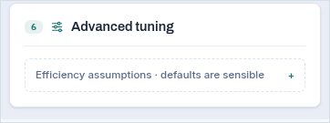
| Assumption | Default | What moves it |
|---|---|---|
| Prefill MFU | 0.50 | Model FLOPs utilization during prefill. Large batched prefills reach 0.5-0.6 on modern stacks; short prompts and small models do worse. Scales TTFT inversely. |
| Decode MBU | 0.65 | Memory bandwidth utilization during decode. 0.6-0.7 is realistic for a tuned server; the theoretical roofline is 1.0 and nobody reaches it. Scales tok/s directly. |
| Interconnect efficiency | 0.85 | The fraction of a tensor-parallel group's aggregate bandwidth you actually get after all-reduce. Inside an NVLink island 0.85 is fair. A group wider than one node is automatically capped at 0.70, and the studio tells you it did. |
| Framework overhead | 30 ms | Scheduling, tokenization, HTTP, guardrail hops. Added to every request's latency, not to TTFT. |
Normal and Advanced mode
Normal numbers the stations, asks for active users rather than concurrency, and hides the tuning controls and the manual topology fields. It is the right mode for a first pass and for handing the tool to somebody who is not a serving engineer. Advanced exposes everything. The switch is non-destructive: nothing is lost or reset, and the mode is remembered per browser.
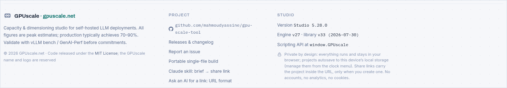
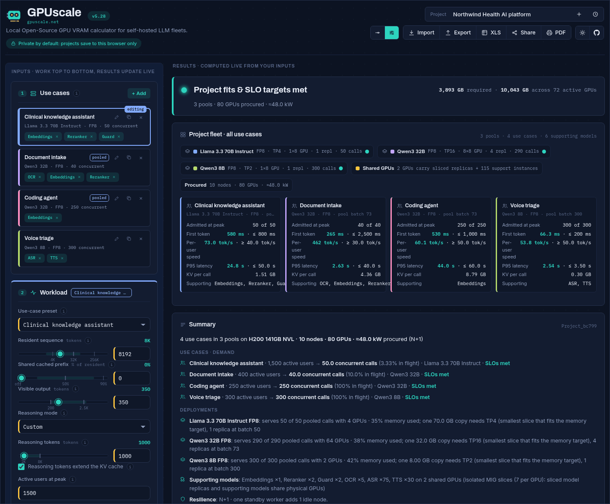
Reading the results
The right column answers, in order: does it fit, what does it cost, where does the memory go, how fast is it, does it keep the promises, what does the rack look like, how does it degrade, and what should you change.
The verdict bar
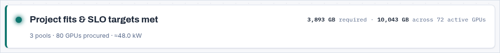
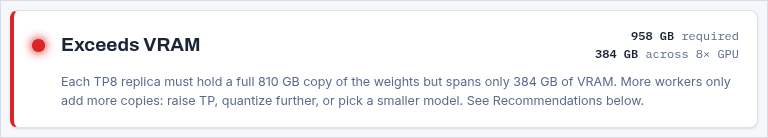
| Colour | Meaning |
|---|---|
| Green | Memory fits inside the fleet and every enabled SLO target passes. |
| Amber | Memory fits, but at least one latency or speed target is missed. The configuration is buildable; it will not keep a promise you made. |
| Red | It does not fit. The line underneath names the binding constraint and the levers that can move it. |
Project fleet
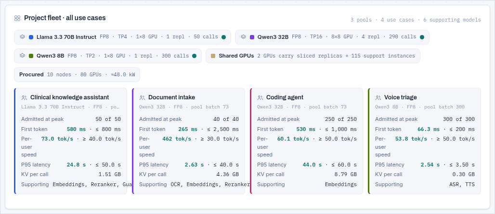
The pool chips carry the deployment shape: precision, tensor-parallel width, GPUs per replica, replica count and pooled concurrency. The per-use-case cards carry what that workload experiences: admitted versus offered calls, first token against its target, per-user speed against its target, P95 against its target, KV cost per call, and which supporting models are attached. Numbers that miss a target are red; numbers with no target are grey.
Summary and the sizing decision
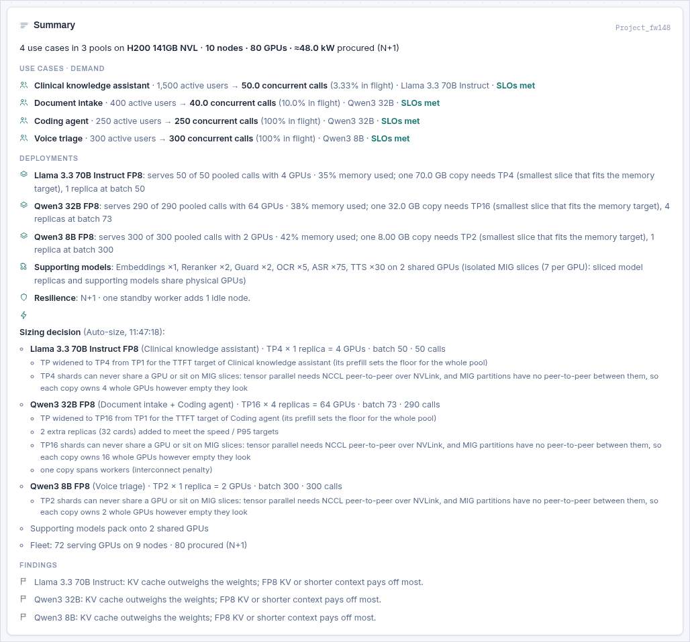
Three blocks:
- Use cases · demand. One line per card: active users, the concurrency that implies and what share of your users that is in flight, the model, and whether its SLOs are met.
- Deployments. One line per pool: how many pooled calls it serves on how many GPUs, the memory used, and the smallest tensor-parallel slice that fits one copy inside the memory target.
- Sizing decision. Written by the solver each time it runs, this is the audit trail: for each pool, the width it started from, whether a first-token target forced it wider, whether the group crosses a node boundary and what that costs, and any target it could not reach at any width.
Underneath, short factual observations that are not recommendations: which pools are KV-dominated, where the cache outweighs the weights, where a shorter context would pay off. They are the input to the recommendations further down, printed separately so you can see the reasoning.
Memory ledger
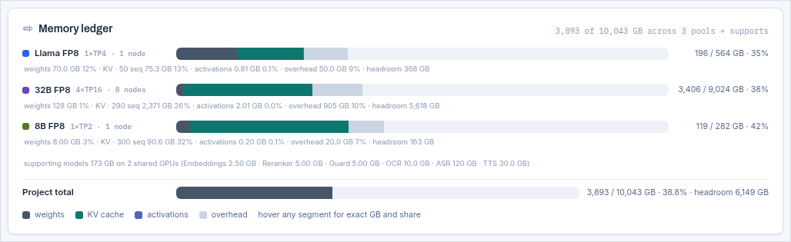
Each bar is one pool, drawn to the same scale so pools are comparable. The four segments are weights, KV cache, activations and overhead; the pale remainder is headroom. Hover any segment for exact gigabytes and its share. The line underneath each bar breaks the same numbers out in text, including the sequence count the KV figure is for, so a screenshot of this panel is self-explanatory.
Supporting models are accounted separately, on their own shared GPUs, and shown on their own line.
Key numbers
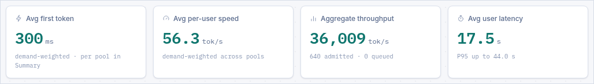
| Tile | Definition | Careful with |
|---|---|---|
| Avg first token | Concurrency-weighted mean TTFT across pools. | A project average hides a slow pool. The per-pool figures are in Summary. |
| Avg per-user speed | Concurrency-weighted mean decode speed. | Per user, not aggregate. |
| Aggregate throughput | Sum over pools of per-user speed × admitted calls. | Only counts admitted requests; queued ones are listed beside it. |
| Avg user latency | Mean end-to-end seconds per request, with the worst P95 beside it. | Includes hidden reasoning tokens, which the user waits for but never sees. |
SLO compliance
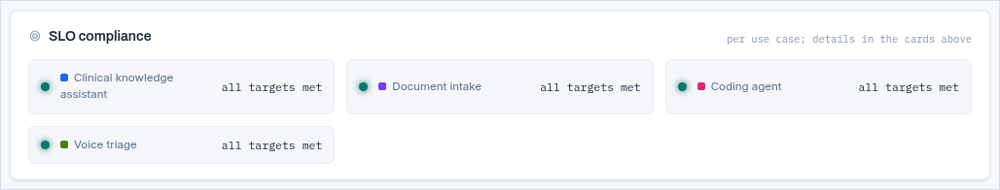
Each badge lists that use case's enabled targets and whether each passes. Disabled targets
(0) are shown as off rather than as a pass, so an empty promise never reads as a kept one.
Deployment topology and fleet map
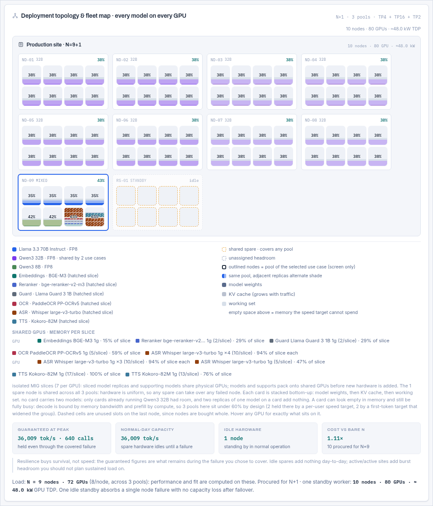
Each node is a box; each GPU inside it is a cell. Cells are coloured by the pool that owns them, with adjacent replicas of the same pool in alternating shades so you can count them. Inside a cell, the stack is drawn bottom-up: model weights, then KV cache, then working set, with the percentage of the card in use. Empty space above the stack is memory the speed target cannot spend.
| Cell appearance | Meaning |
|---|---|
| Solid pool colour | A dedicated card carrying one pool's replica (or a shard of it). |
| Hatched | A shared GPU: MIG slices or fractional allocations carrying sliced model replicas and supporting models. The Shared GPUs line under the map itemises every slice. |
| Dashed outline | An unused slot on the last node. Nodes are bought whole, so these are paid for and idle. |
| Amber dashed | Standby or spare hardware from the resilience pattern: idle in normal operation. |
| Outlined node | Contains the currently selected use case's pool. A screen affordance only. |
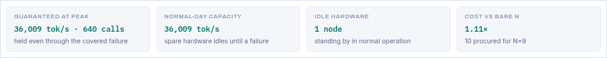
Underneath the map, a text form of the same information is available for screen readers and for pasting into a ticket, listing every node and what sits on each GPU.
The two charts
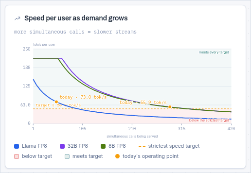
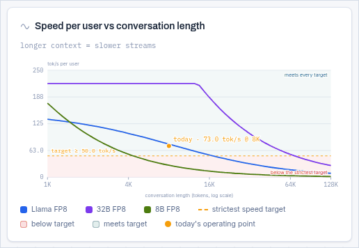
Both charts plot the decode equation from section 5.8 with one variable swept and everything else held at your configuration. One line per pool.
- Shaded bands mark the region above your slowest target (comfortable) and below it (missing). The boundary is the target itself.
- The amber dashed line is the binding per-user speed target, labelled with its value. Where a curve crosses it is the load or context length at which that pool stops keeping its promise.
- A hatched line in the legend marks a target that is currently not met at the operating point, so a failing pool is identifiable without reading the colours.
- The vertical marker is where you are now.
The first chart is the more important one: it is the shape of the batching trade. Adding requests to a replica raises total throughput and lowers every individual user's speed, because the KV that must be re-read each step grows with the batch.
Request latency anatomy
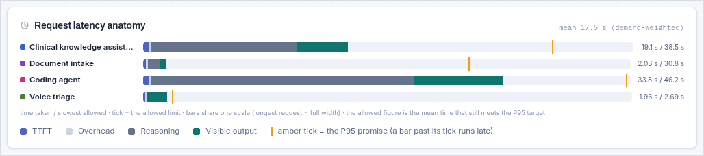
Four segments per use case: first token (prefill), framework overhead, hidden reasoning, and visible output. The reasoning segment is usually the surprise: a reasoning model with an 8,000-token budget spends most of the request producing tokens nobody reads, and that time counts against your P95 exactly like visible output does. The marker shows the P95 for that use case against its target.
Recommendations
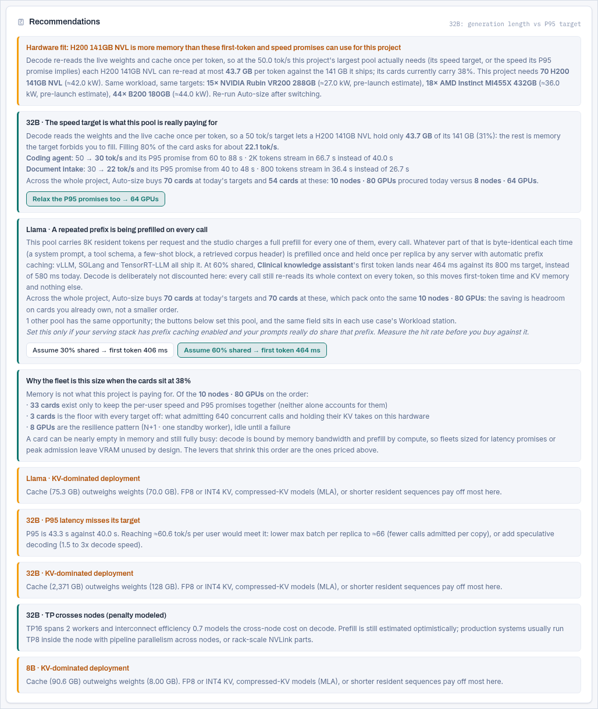
Recommendations are graded: red is a defect in the configuration, amber is a risk or an over-provision, and plain is an explanation or an opportunity. Many carry buttons.
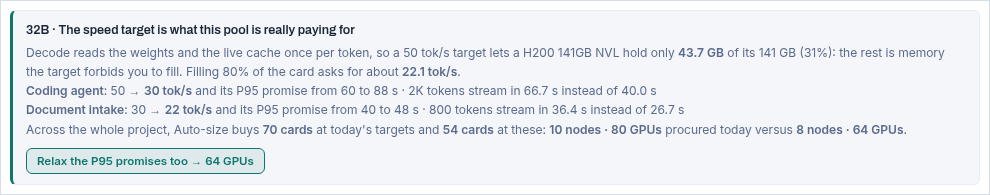
Every button quotes what it would buy back, and that figure comes from re-running the whole solver with the proposed change, not from a rule of thumb. Applying it changes every use case in scope, re-solves, and offers one Undo that restores the project exactly. The studio never silently changes a number you typed.
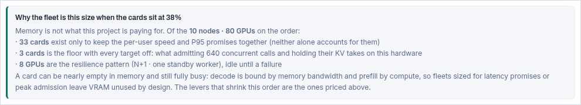
The full catalogue of recommendation types is in section 10.
The mathematics
The engine is about fifty lines of arithmetic between /*ENGINE-START*/ and
/*ENGINE-END*/ in assets/app.js. There is no simulation, no fitted curve and
no lookup table: every output is a closed form of the inputs, which is why the Excel export can
reproduce it cell for cell and why you can check any figure by hand. This section is that arithmetic,
in the order the engine evaluates it.
Notation
| Symbol | Meaning | Unit | Source |
|---|---|---|---|
P | Total parameters | billions | model library |
P_act | Active parameters per token (= P for a dense model) | billions | model library |
L, H_kv, d_head | Layers, KV heads, head dimension | count | model library |
b_w, b_kv | Bytes per weight, bytes per KV element | bytes | Precision station |
S | Resident sequence per request | tokens | Workload |
R | Hidden reasoning tokens per request | tokens | Workload |
O | Visible output tokens per response | tokens | Workload |
f | Shared cached prefix fraction | 0 to 0.95 | Workload |
C | Concurrent calls offered at peak | count | Workload |
B | Max batch per replica | count | Workload / solver |
TP | Tensor-parallel width | GPUs | Hardware / solver |
G | GPUs in the pool | count | Hardware / solver |
V, BW, F | VRAM, HBM bandwidth, dense FP16 TFLOPS per GPU | GB, TB/s, TFLOPS | GPU library |
η_mfu, η_mbu, η_ic | Prefill, decode and interconnect efficiency | fraction | Advanced tuning |
t_ovh | Framework overhead per request | ms | Advanced tuning |
Weights
TP cards but does not shrink it. This is the reason more workers can never make a model
fit.Worked: 70B at FP8 is 70 × 1 = 70.0 GB per replica. At BF16 it is 140 GB, at NV FP4 it
is 35 GB.
KV cache per token, and effective KV
Every token a request holds occupies a key and a value vector in every layer. The uniform-attention form is:
H_kv is KV heads, not attention heads:
grouped-query attention shares one KV head across several query heads, and it is the KV count that
occupies memory. This single distinction is worth an order of magnitude on a modern model.Worked: Llama 3.3 70B has 80 layers, 8 KV heads and a head dimension of 128. At FP8,
2 × 80 × 8 × 128 × 1 = 163,840 bytes = 163.84 KB per token. A 8,192-token request
therefore holds 1.34 GB of cache, and fifty of them hold 67 GB.
Architectures that do not fit the uniform form
Three families would be badly mis-sized by the formula above, so the library encodes them with an effective KV geometry chosen to make that same formula land on the true cost:
| Family | What is different | How it is encoded |
|---|---|---|
| MLA DeepSeek | Compresses key and value into one latent vector per token, so the cache is far smaller than the head count implies. | H_kv = 1 with d_head = 288, which reproduces the 576-dimension latent through the standard 2 × … form. |
| Sliding window Gemma, Ministral, Llama 4 | Only a few layers attend to the full context; the rest hold a fixed window, so the per-token cost falls as the sequence grows. | Explicit kvGlobal full-attention layers plus kvWin windowed ones, evaluated with the second form below. |
| SSM hybrids Jamba, Nemotron-H | Mamba layers carry a constant-size state instead of a growing cache. | kvLayers counts only the attention layers. |
kvWin tokens no matter how long the conversation is. This is why a sliding-window
model's memory curve flattens where a uniform model's keeps climbing, and why the second chart in the
studio is worth looking at for these architectures.For a session workload the resident count is not a constant you guess: it is
base + rate × minutes, and the studio derives it for you in the conversation-length
drawer (section 3.4). Under a pinned KV policy that product is multiplied by
every caller in flight, which makes call duration one of the largest single levers on a voice fleet's
memory.
Prefix caching
Engine v27. If part of the sequence is byte-identical on every call, a server with automatic prefix caching computes it once and stores it once per replica rather than once per request.
S_eff, because a request still attends over its whole context on every generated token
unless the kernel batches shared pages, which not every stack does. Being optimistic about decode
bandwidth would be the expensive kind of wrong.Each replica holds its own copy of the cached prefix, hence replicas × kv_shared in the
total below. A pool with more replicas than concurrent calls therefore saves less, which is correct
and occasionally surprising.
Activations, overhead, and the fit inequality
Diagram 4. Why a fleet sized for latency looks empty, and why that is correct.
Prefill: time to first token
2 × P_act FLOPs (one multiply
and one add per parameter), so a prompt of prefill tokens costs
2 × prefill × P_act. Parameters in billions over TFLOPS gives milliseconds directly. It
scales with active parameters, so an MoE prefills at the speed of its active slice, and it divides by
TP because every card in the group works on the same prompt.Worked: 8,192 tokens of a 70B dense model at TP4 on an H200 (989 dense FP16 TFLOPS) at MFU 0.5:
TTFT = 2 × 8192 × 70 / (989 × 4 × 0.5)
= 1,146,880 / 1,978
= 580 msAt a 50% shared prefix only 4,096 tokens are prefilled and the same expression gives 290 ms.
Decode: tokens per second per user
Generating one token requires reading every active weight and every cached key and value for every request in the batch. Decode is therefore bandwidth bound, and the studio's central equation is a division of available bytes per second by bytes needed per token.
Worked: BW_eff = 4.8 × 4 × 0.85 × 0.65 × 1000 = 10,608 GB/s, weights term
70 × 1 = 70 GB, KV term 50 × 8192 × 0.00016384 = 67.1 GB:
tok/s = 10,608 / (70 + 67.1) = 10,608 / 137.1 = 77.4 tok/s per user
agg = 77.4 × 50 = 3,868 tok/s for the poolAdmission and queueing
End-to-end latency and P95
gen: the user waits for every one of them
and never sees any of them, which is why a reasoning model's P95 is dominated by a budget nobody reads.
The 1.3 multiplier is a fixed convention, not a measured tail. A real deployment's ratio depends
on arrival burstiness and scheduler fairness; validate it with GenAI-Perf or vLLM bench before
committing to a P95 in a contract.Invert the latency equation and a P95 target implies a per-user speed:
tok/s implied by a P95 target = gen / (P95 / 1.3 − (TTFT + t_ovh)/1000)When that number exceeds your stated tok/s target, the speed target is not the lever at all: lowering it changes nothing and only the P95 can shrink the fleet. A 4-second P95 on a 1,000-token generation demands 343 tok/s whatever the tok/s field says. The studio detects this case explicitly and says so, because it once accounted for 89% of a reported project's cards while every suggestion the optimiser knew how to make was a lower tok/s target.
Concurrency from a headcount
Little's law: the number of requests in flight is the arrival rate times the time each one takes.
turns is interactions per user per hour, share the fraction of
interactions that reach the model, calls the model calls per interaction (an agent makes
several), dur the seconds each call occupies a slot, and burst the peak-to-mean
ratio inside the hour. Presets supply a traffic shape per workload class; the studio prints the derived
number and the percentage of your users it represents so you can sanity-check it against your own
telemetry.Worked: 1,500 active users, 4 interactions/hour, 100% reaching the model, 1.5 calls each, 8 seconds
per call, 2.5× burst gives 1500 × 4 × 1 × 1.5 × 8 / 3600 × 2.5 = 50 concurrent calls,
3.3% of the user base in flight.
A complete worked example
Every number below comes from the engine; you can reproduce all of them with a calculator.
| Input | Value | Input | Value |
|---|---|---|---|
| Model | Llama 3.3 70B Instruct | GPU | H200 141GB NVL |
| Geometry | 80 L · 8 KV heads · 128 dim | Per GPU | 141 GB · 4.8 TB/s · 989 TF |
| Weights / KV | FP8 / FP8 | Topology | TP4 · 1 replica · 4 GPUs |
| Resident | 8,192 tokens | Concurrency | 50 calls · batch 50 |
| Visible out | 350 tokens | Efficiency | MFU 0.5 · MBU 0.65 · IC 0.85 |
| Step | Arithmetic | Result |
|---|---|---|
| Weights | 70 × 1 | 70.00 GB |
| KV per token | 2 × 80 × 8 × 128 × 1 / 1e9 | 163.84 KB |
| KV total | 50 × 8192 × 0.00016384 | 67.11 GB |
| Activations | 8192 × 8192 × 12 × 1 / 1e9 | 0.81 GB |
| Overhead | 5 + 1 × (4−1) × 15 | 50.00 GB |
| Total needed | 70 + 67.11 + 0.81 + 50 | 187.91 GB |
| Available | 1 × 4 × 141 | 564 GB → fits, 33% |
| Effective bandwidth | 4.8 × 4 × 0.85 × 0.65 × 1000 | 10,608 GB/s |
| Per-user speed | 10608 / (70 + 67.11) | 77.4 tok/s |
| Aggregate | 77.4 × 50 | 3,868 tok/s |
| First token | 2 × 8192 × 70 / (989 × 4 × 0.5) | 580 ms |
| Inter-token | 1000 / 77.4 | 12.9 ms |
| Mean latency | (580 + 30)/1000 + 350/77.4 | 5.13 s |
| P95 | 1.3 × 5.13 | 6.67 s |
Against the Clinical knowledge preset's targets of 800 ms, 40 tok/s and 50 s, all three pass with
room to spare. (The example sets reasoning to zero rather than the preset's 1,000-token budget, purely
to keep the arithmetic followable. Switch it on and gen becomes 1,350 tokens, and because
those tokens also extend the KV cache the per-user speed falls to 73.0 tok/s, so the mean latency rises
to 19.1 s and the P95 to 24.8 s: still inside the 50 s promise, but four times the number above.) Now set the shared cached prefix to 50%: the prefill halves to 4,096 tokens, TTFT falls
to 290 ms, KV total falls to 34.2 GB because the shared half is held once instead of fifty
times, and the per-user speed is unchanged at 77.4 tok/s, exactly as
section 5.4 promises.
The auto-size solver
Auto-size answers: what is the cheapest topology that fits this pool and keeps every member's promises? It runs per pool, and it is deterministic: the same inputs always produce the same plan.
Diagram 5. The solver in full. Step 3c is the important one: the replica count that hits a speed target is algebra, not a loop.
Invariants the solver is held to
These are enforced by a fuzz harness over thousands of random configurations, and each of them was added after a real defect:
| Invariant | What it prevents |
|---|---|
| No plan is beatable by a cheaper feasible plan | The solver buying a wide TP when a narrow one with more replicas was cheaper and also passed. Currently 0 beatable out of 3,664 sampled plans. |
| A pool owns cards, never whole nodes | A pool needing two cards being handed eight, because nodes are only rounded at the fleet level. |
| An unreachable target never suppresses a reachable one | A pool mixing an impossible P95 with an achievable speed target having the hardware that met the achievable one handed straight back. |
| Tensor parallelism is a speed lever, not only a fitting lever | Buying replicas forever against a target that only bandwidth per replica could reach. |
| Demand is capped safely | Trimming a replica for cost when a member's P95 needed it. |
| Co-residency is latency-safe | Packing two pools onto a card whose duty cycle or first-token budget cannot absorb the neighbour. |
If a target is unreachable at any width and any batch size, the studio says so in the sizing decision and marks the pool stuck rather than buying hardware that will not help. The recommendations then propose what would make it reachable, priced.
Pooling, co-residency and MIG slicing
Three different mechanisms let one GPU carry more than one thing. They apply in this order.
Pooling · one deployment, several use cases
Two use cases with the same model, the same weight precision, the same KV precision and the same KV policy are one deployment. Their concurrency adds, the pool is solved once against the combined load, and each member is then checked against its own targets at the pool's shared batch size. Tick Isolate to prevent it.
Whole-GPU co-residency
Separate pools can share one physical card the way vLLM memory fractions or Triton multi-model do. The studio merges them only when every one of these holds, and it records which one refused:
| Gate | Test |
|---|---|
| Memory | The sum of the per-GPU footprints stays under the auto-size memory target. |
| Duty cycle | The combined decode bandwidth demand stays under 95% of one card. Two pools each wanting 60% of a card's bandwidth do not fit on it, whatever the memory says. |
| First token | Neither tenant's TTFT headroom is consumed by sharing prefill compute with the other. |
| P95 | Both tenants still meet their P95 with the neighbour present. |
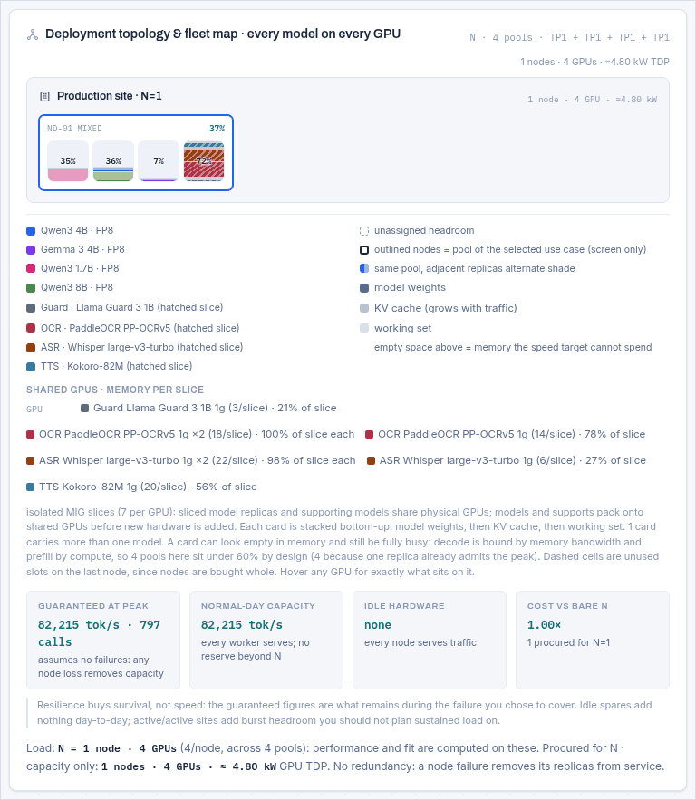
MIG slicing
A pool at TP1 whose copy fits a hardware partition can run one replica per slice and share physical GPUs with other models and with supporting services, the way Triton and vLLM deployments do on partitioned clusters. Only real slice geometries are offered, per GPU, and the per-slice speed is computed from that slice's own bandwidth and compute rather than the whole card's.
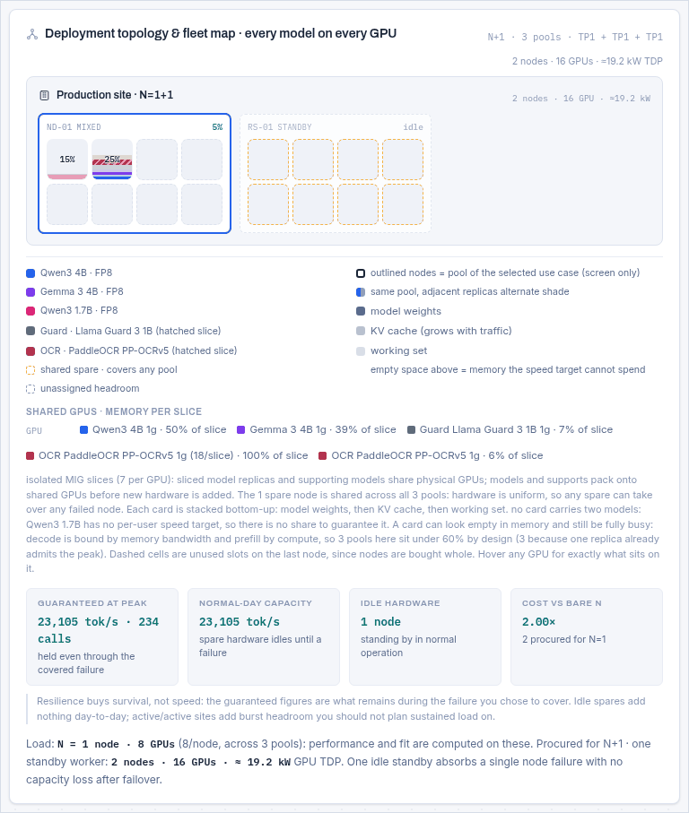
Slices exist only whole, so a sliced plan is costed by first-fit-decreasing bin packing against the slices the supporting models already occupy, and the pool is charged only its marginal GPUs beyond those. The studio compares that against the dedicated plan and takes whichever is genuinely cheaper. Slicing frequently loses, and the sizing decision says why it was rejected for each pool: too large to fit a slice, no partitioning on this GPU, or simply more expensive.
Supporting models
A RAG copilot is not one model. It is a generator plus an embedder plus a reranker, probably a guard model, and for a voice path an ASR and a TTS. Those services are small, they are always on, and leaving them out of a capacity plan is how a fleet arrives 15% short.
Presets attach the right kinds automatically; the chips on each use-case card show what is attached and let you change the model or detach it. 54 supporting models are in the library across six kinds, from tiny CPU-viable encoders to flagship tiers, including Arabic-specialised ASR, TTS, OCR, embedding, reranking and guard models.
| Kind | Attached by | Sizing note |
|---|---|---|
| Embeddings | RAG, document and clinical presets | One instance serves many queries; the cost is residency, not throughput. |
| Reranker | RAG presets | Cross-encoder, invoked per retrieved passage, so its instance count scales with retrieval depth. |
| ASR | Voice presets | Streaming; its first-chunk latency is part of the voice budget the LLM target is carved out of. |
| TTS | Voice presets | As above, at the other end of the turn. |
| OCR | Document intake | Page-rate driven rather than user driven. |
| Guard | Public-facing and clinical presets | Usually invoked twice per request, on the way in and on the way out. |
Not in the library? Every chip's model dropdown ends with Custom (enter geometry), which asks for the only two numbers the sizing needs: gigabytes per running instance, and how many concurrent streams or queries one instance serves before another is needed. The fields are seeded from whatever was selected, so a house ASR starts from the nearest published model rather than from zero. A custom chip is drawn with a dashed border, and the geometry travels in the JSON export and in share links.
Supports are aggregated across the project by kind and model, so ten use cases that all want the same embedder do not buy ten embedders. They are then packed onto MIG slices, AMD partitions or fractional GPUs, and appear in the fleet map as shared cards and in the memory ledger on their own line. Their GPUs are counted once in the fleet total.
Resilience patterns
Capacity and survival are different purchases. The resilience model decides how much hardware you buy beyond the serving fleet and what that hardware guarantees during a failure.
| Pattern | Procured | What it buys |
|---|---|---|
n | N | Capacity only. A node failure removes its share of capacity. |
n1 | N + 1 | One standby worker. One node can fail with no capacity loss. The common default. |
n2 | N + 2 | Two standby workers: two concurrent failures, or one failure during planned maintenance. |
nn | 2N | In-site mirror. Survives losing half the fleet. |
dr | 2N | Full standby site, active/passive. Survives losing a site. |
drh | 1.5N | Half-size standby site: the second site runs degraded, which is often the honest trade. |
aas | N | Active/active split: the same N spread across two sites, both serving. No extra hardware, and no spare capacity when a site is lost. |
aas1 | N + 1 | The split above plus one spare shared across the two sites. |
aass | N + 2 | The split above with a spare in each site. |
aa | 2N | Two live sites, each able to carry the whole load. |
aan1 | 2N + 2 | Two live sites, each internally N+1. |
nndr | 4N | Active/active twin sites, each itself mirrored. The most expensive pattern the studio models. |
The four tiles under the fleet map separate two numbers people routinely conflate. Guaranteed at peak is what remains after the failure you chose to cover. Normal-day capacity is what you get when nothing is broken. Active/active patterns raise the second without raising the first, which makes them look like better value than they are if you plan sustained load on the burst headroom. Idle standby hardware adds nothing to either number on a normal day: it buys survival, not speed.
Spare nodes are shared across pools where the hardware is uniform, because any spare can take over from any failed node. That is why a project with three pools and N+2 buys two spares, not six.
The SLO optimiser
Latency promises buy hardware. The optimiser's job is to show you the exchange rate and let you take the trade in one click, with an Undo.
What it proposes
| Recommendation | Trigger | Button |
|---|---|---|
| The speed target is what this pool is really paying for | A lower per-user speed target would shrink the fleet | Two levels: one that keeps every P95 promise exactly, one that relaxes P95 by at most half again. Both bounded by the workload class floor, so a live voice path is never asked to read at 19 tok/s. |
| The P95 promise is the binding one | The P95 implies a higher speed than the tok/s field does, so lowering tok/s cannot help | A reachable P95, priced. |
| The first-token target is buying the TP width | TTFT widening chose a wider group than fitting needed | Names the use case responsible and what a looser target would return. |
| A repeated prefix is being prefilled on every call | 8K+ resident tokens with no shared-prefix fraction set | 30% and 60%, each labelled with what it buys: GPUs off the order, or first-token headroom. |
| Why the fleet is this size when the cards sit at N% | Fleet utilisation below 50% | No button: an itemised account of the order by constraint class. |
| KV-dominated deployment | Cache outweighs weights | KV cache to FP8. |
| Exceeds VRAM | Does not fit | Weights to FP8, a wider tensor-parallel group, or a batch cap. |
| No redundancy configured | Resilience is bare N | N+1. |
| Interconnect efficiency is costing N cards | IC set below the default | Reset to 0.85 and re-solve. |
| TP crosses nodes (penalty modeled) | A group is wider than one node | No button: states that IC was capped at 0.70 and what it cost. |
The rules it plays by
- Never silently change a number you typed. Every change is a button you press, and every button quotes its effect first.
- Price by re-solving, not by estimating. The saving on the button comes from running the whole solver on the modified project.
- Quote the unit you buy. Cards are what a change moves; nodes are what you order. When a real card saving does not reach the procurement line, the recommendation says so in those words rather than implying a smaller order.
- Never propose something a workload class forbids. Floors come from the use case's own fields, not from the preset dropdown, so switching a voice agent to a custom workload does not change what it is.
- Round the paired promise the safe way. When a suggestion pairs a new speed with a new P95, the P95 is rounded up, because writing a promise the recommended speed cannot meet would be a lie.
- One Undo restores everything, across every use case the change touched.
Workload presets and the evidence behind them
The 24 presets are not opinions. Each one's SLO targets, context length and token budgets trace to published production guidance or a benchmark standard, and the trace is recorded in docs/PRACTICES.md along with a July 2026 review of every one of them.
| Class | TTFT | Per token | As tok/s |
|---|---|---|---|
| Interactive chat | 300 ms p99 | 50 ms ITL | 20 |
| RAG-augmented chat | 400 ms p99 | 80 ms ITL | 12.5 |
| Voice agent | 150 ms p99 | 30 ms ITL | 33 |
| Code completion, inline | 100 ms p99 | 25 ms ITL | 40 |
| Code completion, panel | 300 ms p99 | 50 ms ITL | 20 |
| Reasoning, interactive | 1.5-2.0 s p99 | 15 ms TPOT | 67 |
| Reasoning, server | 2.0-3.0 s p99 | 80 ms TPOT | 12.5 |
| Frontier dense, server | 6 s p99 | 175 ms TPOT | 5.7 |
| Batch / async | 3,000 ms | 200 ms ITL | 5 |
Two rules govern every preset, and tools/check_presets.py enforces the first mechanically
on every release:
- Self-consistency.
p95Target ≥ 1.3 × (ttftTarget/1000 + (reasonTok + visibleOut) / tpsTarget). A preset may never demand a P95 its own first-token and speed targets make arithmetically impossible. - Per request, not per task. Every field describes one model call.
Presets are referenced by name, so adding one is safe and editing one is not. If you maintain a fork, cite the source in PRACTICES.md and run the checker. Corrected targets only reach an existing card when its preset is re-selected.
Exports, share links and AI assistants
JSON
Schema gpuscale.net/5. Carries every use case, the project-wide hardware, and a full
geometry snapshot of every model and GPU used, so the file still opens correctly after a library entry
is renamed or removed: the studio rebuilds a missing model as a custom one and tells you it did. Older
v3 and v4 single-scenario files import as a one-use-case project.
Excel workbook
Five sheets, and the important thing about it is that the Results sheet contains formulas, not values. Change a cell on the Inputs sheet and the whole model recalculates in Excel, mirroring the engine cell for cell.
| Sheet | Contents |
|---|---|
| Report | A formatted one-page brief: verdict banner, demand per use case, deployments, key numbers, the memory ledger, three native Excel charts, and a drawn fleet map. |
| Inputs | Every input as a named, editable cell, including the shared cached prefix. |
| Results | The full engine as live formulas: kvTok, cachedTok, uniqueSeq, kvShared, kvTotal, ttft, tps, memory terms and the SLO checks. |
| Data | The series behind the charts. |
| Project | Per use case and per pool detail, plus the node map. |
PDF report
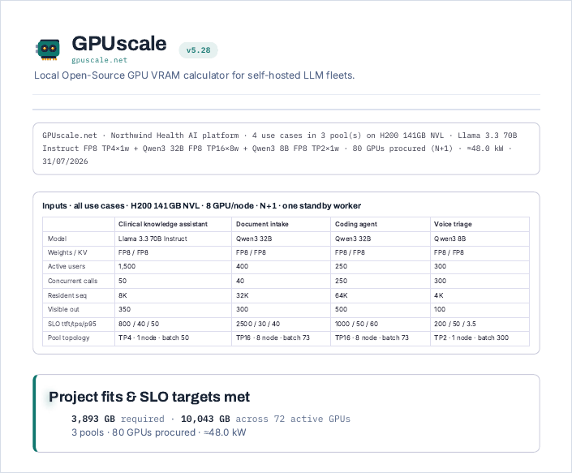
It adds two things the screen does not show: a printed inputs table covering every use case, and a Reading of this configuration narrative that states the assumptions in prose for a reader who was not in the room.
Share links
Three payload forms, all carrying the project inside the URL fragment. Nothing is uploaded and no short-link service is involved unless you self-host the optional worker.
| Form | Payload | Who writes it |
|---|---|---|
#p=z: | deflate-raw + base64url of the project JSON | The Share button. Compact. |
#p=j: | base64url of the project JSON | Fallback where CompressionStream is unavailable. |
#p=t: | plain readable key=value pairs | Anyone, including a chat model with no tools. |
Opening a link imports it as a new local project, never overwriting existing work, saves it, and clears the address bar so a refresh keeps your edits rather than the sender's snapshot.
Getting a link from ChatGPT, Gemini or Claude
The readable form exists because no chat model can deflate or reliably base64 a kilobyte of JSON, so without it an assistant could only give you arithmetic you cannot check. With it, an assistant can answer a sizing question with a link that opens a fully solved fleet:
https://gpuscale.net/#p=t:gpu=H200+141GB+NVL;perw=8;resil=n1;uc=Support+chat;
model=Llama+3.3+70B;quant=FP8;preset=Simple+RAG;users=2000Pairs separated by ;, every uc= starts a use case, spaces written
+. It carries the workload only; the studio solves the hardware. The complete key table,
worked examples, encoding recipes and the rules that keep a generated link honest are in
docs/URL-FORMAT.md. Point your assistant at that file, or at
llms.txt, and it can build links unaided.
In the page, GPUscale.textShare() prints the readable link for whatever is on screen,
which is the fastest way to learn the format. For agents with a shell, the downloadable
gpuscale-link.skill in the footer validates every name, clamps every field and round-trips
the link before printing it.
Talking to the studio from an agent (MCP)
An agent does not have to build a link. mcp/gpuscale-mcp.mjs is a single file
with no dependencies that exposes this engine over the Model Context Protocol, so any MCP client can
call it as tools:
curl -O https://gpuscale.net/mcp/gpuscale-mcp.mjs
claude mcp add gpuscale -- node /path/to/gpuscale-mcp.mjs| Tool | What it answers |
|---|---|
size_project | The whole studio in one call: fleet, per-pool topology, per-use-case SLO verdicts, recommendations, and a link back into the browser. Pools use cases, attaches supporting models, applies the resilience pattern. |
compare_gpus | The same workload across several cards, ranked by GPUs procured then power. |
audit_spec | Contradictions without sizing. |
build_link / read_link | A spec to a studio URL, and back. |
list_library | Every valid model, GPU, preset, quantization, resilience pattern and supporting model. |
It is generated from assets/app.js by tools/build_mcp.py, embedding
the engine, the solver and the entire project layer verbatim, so an agent gets the studio's numbers
rather than a reimplementation of them. tools/check_mcp.py proves it: it sizes this
manual's reference project through the protocol and compares the result against what the browser
renders, down to each pool's tensor-parallel width, replica count and memory percentage.
The server does arithmetic. It never calls out, never loads a model and never reports anything, so it runs unchanged inside an air-gapped network. It also refuses a configuration that cannot work, rather than sizing it and letting the agent present the result: a context overflow, SLO targets that contradict each other, a quantization the card cannot run.
Libraries, and extending them
Everything the studio knows lives in five one-entry-per-line files under data/. There is
no build step: edit a line, reload the page.
| File | Entries | Notes |
|---|---|---|
models.js | 101 | Dense, MoE, MLA, SSM hybrids, sliding-window, VLMs, and a deep Arabic and GCC sovereign set. Undisclosed internals are flagged est. cfg. |
gpus.js | 37 | Dense (not sparsity) TFLOPS, real HBM bandwidth, VRAM, TDP and partitioning profiles. |
quants.js | 19 + 5 | Weight formats and KV formats, in bytes per element. |
usecases.js | 24 | Workload presets with their traffic shapes. |
support.js | 54 | Supporting models across six kinds. |
Adding a model is one line:
{"name":"MyModel 34B","params":34.0,"active":34.0,"hidden":7168,"layers":60,
"kvHeads":8,"headDim":128,"ctx":131072, ...}Use the effective-KV convention from section 5.3 for MoE, MLA and hybrid
attention. docs/DATA.md has the complete schemas and worked examples for each
family. The generated artifacts (the portable single-file build and both skills) are rebuilt by three
scripts under tools/ so they cannot drift from the live engine.
Accuracy, limits and validation
Peak closed-form estimates. They land within roughly 10 to 30% of benchmarked behaviour when the efficiency assumptions match your stack, and production fleets typically achieve 70 to 90% of peak. Scope with this tool; verify with a benchmark; sign with margin.
Deliberately not modelled
| Not modelled | Why, and what to do |
|---|---|
| Queue waiting time | Depends on arrival distribution, not capacity. Queued requests are reported; their delay is not. |
| A measured P95 tail | The 1.3× multiplier is a convention. Measure yours with GenAI-Perf. |
| Speculative decoding | Worth 1.3-2× on decode when draft acceptance is high, but acceptance falls as batch grows, so the multiplier is largest exactly when the fleet is least loaded. It belongs in the margin column, never in the guaranteed one. |
| Decode benefit from shared-prefix kernels | Cascade attention can read a shared block once per batch. Not every stack does; the studio stays conservative. See 5.4. |
| Prefill/decode disaggregation | Splitting the phases onto different hardware changes the shape of the problem; the studio sizes a homogeneous pool. |
| Mixed GPU types in one project | A serving pool is homogeneous in practice. |
| Cooling, networking, storage, power distribution | The kW figure is GPU TDP only. Facility overhead is typically another 30-50%. |
How the engine itself is verified
Every release runs the same battery before it ships, and the numbers are recorded in the changelog:
- Parity against the previous release for any input that should be unaffected by a change. Engine v27 was byte-identical to v26 across 9,000 comparisons with prefix caching off.
- An independent reimplementation in Python, written from the documented formulas rather than from the code, checked field by field over thousands of random states. Latest run: 2,500 states, 75,000 field checks, zero mismatches.
- Solver optimality fuzz: no sampled plan is beatable by a cheaper feasible one.
- Reference projects re-rendered and diffed line by line against the previous release, so an unintended change to any number is caught before release.
Privacy, offline use and troubleshooting
- Nothing is uploaded. No accounts, no analytics, no cookies, no telemetry. Projects autosave to your browser's local storage; clearing site data clears them.
- Works offline. The page is installable, and the portable build is the whole studio in one HTML file you can email into an air-gapped network.
- A share link is a one-shot import into a new local project. It can never clobber existing work.
- Numbers look wrong? Check Resident sequence first: it is the tokens held per request, not the context window, and it is the field that is wrong nine times out of ten.
- Fleet looks too big? Read the Why the fleet is this size recommendation. It itemises the order by cause.
- Reporting a bug: include the version and engine numbers from the footer and a share link. The link reproduces your project exactly, and it contains nothing but your configuration.
Glossary
| Term | Meaning |
|---|---|
| Active parameters | Parameters touched per token. Equals total for a dense model; much smaller for an MoE. Drives speed and TTFT. |
| Admitted | Requests actually in flight, as opposed to offered. min(concurrency, batch × replicas) under a running batch. |
| Card | One GPU. Pools own cards; nodes are bought whole. |
| Effective KV | An encoded geometry that makes the standard KV formula land on an unusual architecture's true per-token cost. |
| ITL / TPOT | Inter-token latency, time per output token. The reciprocal of per-user tok/s. |
| MBU | Memory bandwidth utilization: the fraction of theoretical HBM bandwidth a real decode loop achieves. |
| MFU | Model FLOPs utilization: the same idea for prefill compute. |
| MIG | Multi-Instance GPU: hardware partitioning of one card into isolated slices with their own memory and bandwidth. |
| Pool | One deployment serving every use case that shares its model, precisions and KV policy. |
| Prefill / decode | The compute-bound pass over the prompt, and the bandwidth-bound one-token-at-a-time generation that follows. |
| Replica | One complete copy of the model. Adds concurrency, never room for one copy. |
| Resident sequence | Tokens held per request right now. Not the context window. |
| Shared cached prefix | The part of a request that is byte-identical every call, prefilled once and held once per replica. |
| Tensor parallel (TP) | One model copy split across TP GPUs, which multiplies bandwidth and compute for that copy. |
| TTFT | Time to first token: how long the user stares at nothing. |
Where to go next
docs/DATA.md
Data schemas, the effective-KV convention, card stamps, co-residency gates and the engine version history.
docs/PRACTICES.md
The published evidence behind every workload preset, and the 2026 review of all of them.
docs/URL-FORMAT.md
How to build a configuration link, for AI assistants and for scripts.
Changelog
Every release with its reasoning, its corrections and its verification numbers.
Source
MIT licensed. The engine is fifty lines you can read in five minutes.
The studio
Back to work.
GPUscale manual · studio 5.34 · engine v27 · library v34. Written against the code, with every figure captured from the running application and every formula checked against the engine. © 2026 GPUscale.net, MIT licensed.